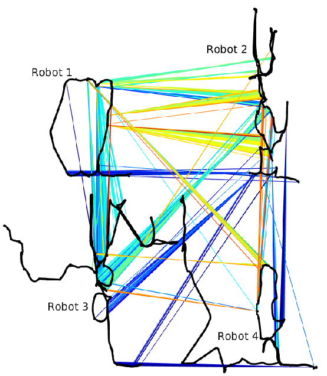
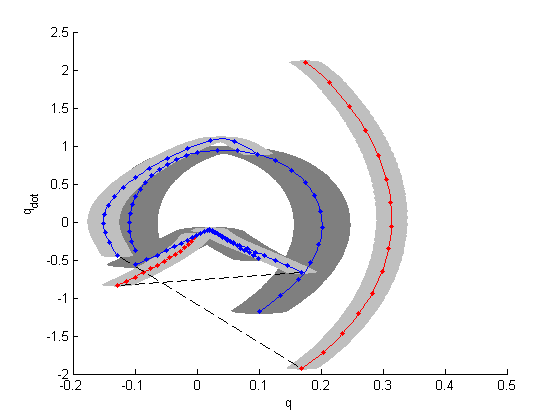
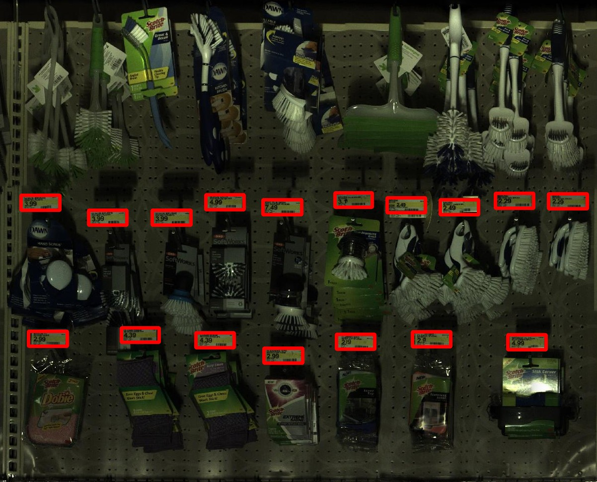
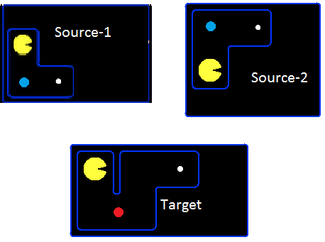
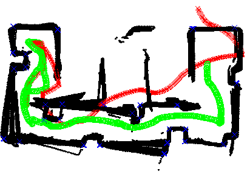
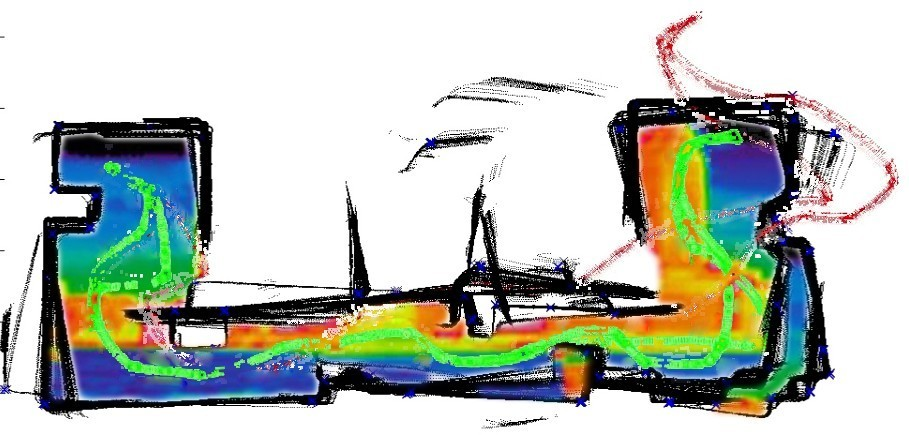
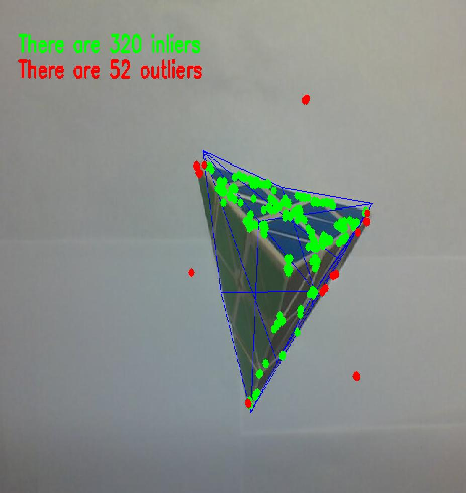

|
Research Projects
Efficient Factor Graph Fusion for Multi-robot Mapping
|
 |
This work presents a novel method to efficiently factorize the combination of multiple factor graphs having common variables of estimation.
The fast-paced innovation in the algebraic graph theory has enabled new tools of state estimation like factor graphs. Recent factor graph
formulation for Simultaneous Localization and Mapping (SLAM) like Incremental Smoothing and Mapping using the Bayes tree (ISAM2) has been
very successful and garnered much attention. Variable ordering, a well-known technique in linear algebra is employed for solving the factor
graph. Our primary contribution in this work is to reuse the variable ordering of the graphs being combined to find the ordering of the
fused graph. In the case of mapping, multiple robots provide a great advantage over single robot by providing a faster map coverage and
better estimation quality. This coupled with an inevitable increase in the number of robots around us produce a demand for faster algorithms.
For example, a city full of self-driving cars could pool their observation measurements rapidly to plan a traffic free navigation.
By reusing the variable ordering of the parent graphs we were able to produce an order-of-magnitude difference in the time required for
solving the fused graph. We also provide a formal verification to show that the proposed strategy does not violate any of the relevant
standards. A common problem in multi-robot SLAM is relative pose graph initialization to produce a globally consistent map. The other
contribution addresses this by minimizing a specially formulated error function as a part of solving the factor graph. The performance is
illustrated on a publicly available SuiteSparse dataset and the multi-robot AP Hill dataset.
[Paper]
[Slides]
|
Planning and Control of Hybrid Systems with Limit Cycle using LQR Trees
|
We present a multi-query recovery policy for a hybrid system with goal limit cycle. The sample trajectories and the hybrid limit cycle
of the dynamical system are stabilized using locally valid Time Varying LQR controller policies which probabilistically cover a bounded
region of state space. The original LQR Tree algorithm builds such trees for non-linear static and non-hybrid systems like a pendulum or
a cart-pole. We leverage the idea of LQR trees to plan with a continuous control set, unlike methods that rely on discretization like
dynamic programming to plan for hybrid dynamical systems where it is hard to capture the exact event of discrete transition. We test the
algorithm on a compass gait model by stabilizing a dynamic walking hybrid limit cycle with point foot contact from random initial conditions.
We show results from the simulation where the system comes back to a stable behavior with initial position or velocity perturbation and
noise.
[Paper]
[Slides]
[Movie]
|
 |
Complexity Analysis of Multi Scale and Multi Channel Cascade Classifier Detector
|
 |
Viola-Jones object detection algorithm is a gold-standard in computer vision to detect trained objects at a very high speed
using boosted classifiers. Because of their speed, they are used for object detection based landmark extraction in SLAM.
To improve the detection performance by reducing the false positive rate, at lower resolution and eventually at a higher speed we
extend the algorithm to utilize all the color channels in the input image. The original version works only on grayscale images. We retain the
scale-invariant property of the algorithm and increase the detection percentage along with the
detection speed by leveraging the additional information obtained by using all the channels of the image. The improved version uses the same
metric used in the original version to score a Haar feature but does it for all the channels of the input image. Thus the score is represented
as a vector as opposed to a scalar value in the original version. These vectors are then ranked using linear discriminant analysis. The increase
in the time complexity is supplanted by the ability to achieve better detection rates at lower
resolution thereby producing a lower detection time overall. Because of the time sensiztive nature of the application, it is important to understand how the various tunable
parameters affect the detection time. We perform complexity analysis of the multi-scale and multi-channel decision tree
based detector.
[Report]
|
Transfer from Multiple Linear Predictive State Representations (PSR)
We tackle the problem of transferring policy from multiple partially observable source environments to a partially observable
target environment modeled as predictive state representation. This is an entirely new approach with no previous work, other
than the case of transfer in fully observable domains. We develop algorithms to successfully achieve policy transfer when we
have the model of both the source and target tasks and discuss in detail their performance and shortcomings. These algorithms
could be a starting point for the field of transfer learning in partial observability.
[Report]
|
 |
Sensor Modeling and Reliability Map, Feature Extraction, Landmark Association and EKF implementation for a Mobile Robot
|
 |
Autonomous Mobile robot plays a significant role in minimizing human intervention in a highly hazardous zone. It is imperative for an
agent like a mobile robot to independently build a model of the surrounding environment as well as to localize itself within that
identified zone. It is essential that the robot has to address simultaneously both the mapping and localization problem. The research
community over the past two decades have come up with many innovative algorithmic solutions to provide meaningful estimates using
highly uncertain information. This project is oriented more towards solving this Simultaneous localization and mapping(SLAM) problem
using a scientifically well established theory of Extended Kalman Filter (EKF).The mathematical elegance of this method and the
user friendliness of this algorithm has always attracted the research people in terms of improving the performance an inch further and
the other reason for their interest is due to the fact that the real time technical issues was not well addressed so far. It is quite
hard to get a literature on the implementation issues of this algorithm for solving the SLAM problem.
|
This project report presents the
successful demonstrations of the EKF-SLAM implementation on the Coroware mobile robot using both odometer and range scanning sensor.
This project addresses issues related to mathematical modeling of both system and sensors, selection of EKF tuning parameters, analysis
and interpretation of covariance matrices, feature extraction and data association techniques for better mapping and localization. The
real time implementation difficulties are explained with technical insights. The algorithm was tested in real time with a structured
environment and proved to be effective with 30cm accuracy.
[Paper 1]
[Paper 2]
[Movie]
|
 |
Course Project(s)
Object Recognition, Pose Estimation and Tracking of a Rigid Object with Planar Surface
|
 |
Formulated a methodology to solve the problem of object detection given the 3D model of the object and sufficient non co-planar 2D points
in the image. The ORB features of the model are matched with scene descriptors using Flann Matcher. My role was to formulate the situation
as Perspection-n-Point problem to estimate the pose and do kalman filtering to do tracking and eliminate the bad poses. The entire work
is done in OpenCV and programmed in C++/Python.
[Paper]
[Movie 1]
[Movie 2]
|
|